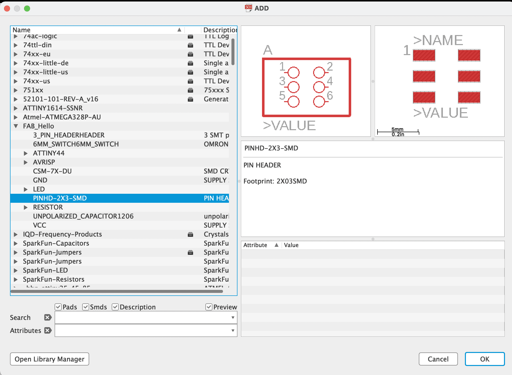
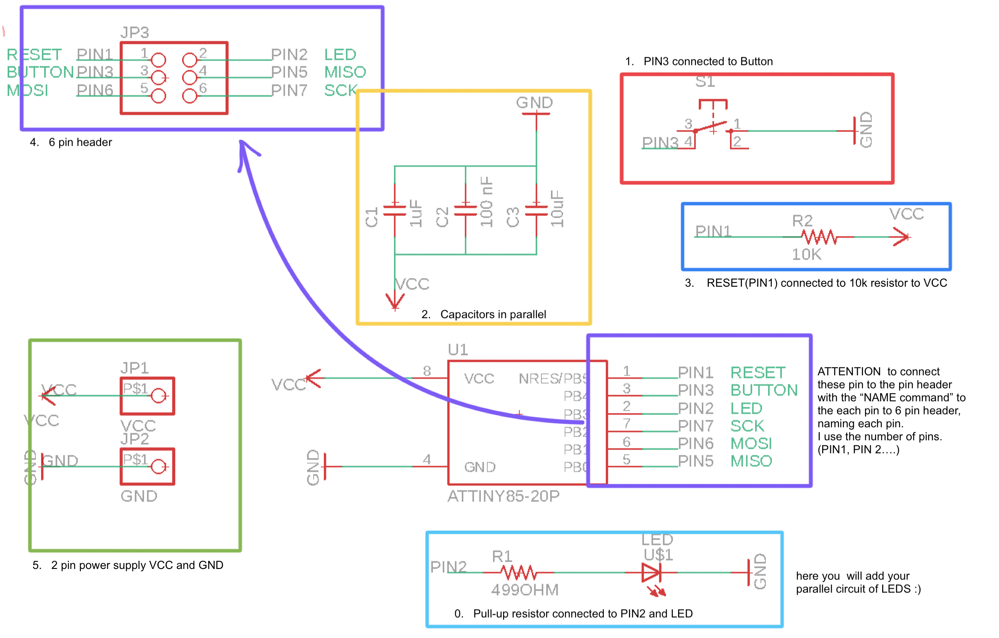
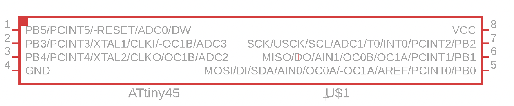
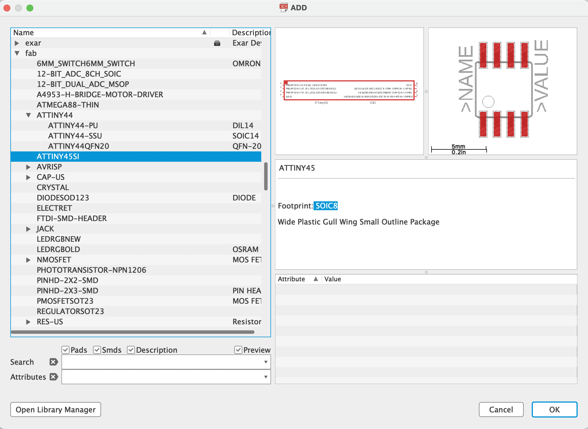

Electronics Design
mixing of Debbugging and pcb requirements
This class covered debugging a little differently than the usual way after we had produced our PCBs.
To complement our PCB design, in this class we looked at how to connect a button to our board and how to program it, using Arduino and then integrating it to the PCB design schematic in EAGLE,
here some references of the circuit the following link,using toggle
arduino button toggle led
Then we enter a little Debugging topic programming our Attiny85 using our Arduino IDE as ISP
here a link to program it.
ATtiny datasheet
Connecting the Arduino board and the ATtiny
Connecting the Arduino board and the ATtiny sound melody
more information about programming protocols by Florian Paproth I Digital Prototyping Academy
an excellent reference from my previous students in the soft prototypingg class, is the documentation work of Olena Kokhan, who made a sound and light christmas card, in this same way you could also document the process of her last PCB using Wikifactory.
Assigment:
Design your PCB with the following requirements
1. you are going to finish the PCB design, in EAGLE with the LED parallel circuit PIN 2 and button PIN 3.
2. For the best performance of the board, you are going to make a parallel circuit of 3 capacitors (1uF, 10uF and 100nF) connected to VCC and GND.
3. you will connect the RESET (PIN 1) with a resistor (10K) that will be connected to VCC.
4. you will connect a 6 pin header for the programming pins
* RESET (PIN 1)
* PIN 2
* PIN 3
* MOSI (PIN 5)
* MISO (PIN 6)
* SCK (PIN 7)
to add the pin header go to the command ADD and look in the components at the FAB Hello > PINHD 2X3 SMD

5. In case you don´t have the pins you will add a 2 pin header for
* VCC (PIN 8)
* GND (PIN 4)
in the following picture you can find a similar design how should look your own SCH

you will finalize your own design of the Board layout in Eagle.
you will try to use one of the techniques presented in the previous classes (conductive ink, copper tape).
for those interested in conductive ink, please cut the stencil beforehand.
SUPER IMPORTANT !!!! Finally you will document this process on wikifactory.as A project this would be mandatory!!!!!
2. optional
6. you can change the microcontroller ATTiny485 to package SOIC8, to minimalize the board

you can find this component in the library "fab" under the name ATTINY45SI

For those interested in getting a useful socket for programmming ATTiny DIP(THT) using the Arduino as ISP. working further with the THT(Through Hole Technology)
have a funny week
Adriana Cabrera